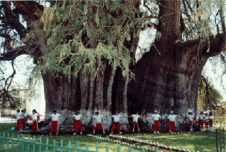
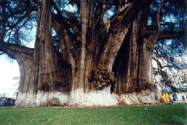

Oaxaca, Mexico and the Arbol del Tule


Fotografos: Edilberto Soto Hernandez
Calle Centenario No. 30
Oaxaca, Mexico
El Tule Oaxaca
For information on El Tule, please write to:
Ing. Jorge Augusto Velasco
Comite Mi Amigo el Arbol
Tinco y Palacios, 411
Cuidad de Oaxaca, Oaxaca 06800
MEXICO
 Return to Main Page
Return to Main Page
June Julian jj68@nyu.edu